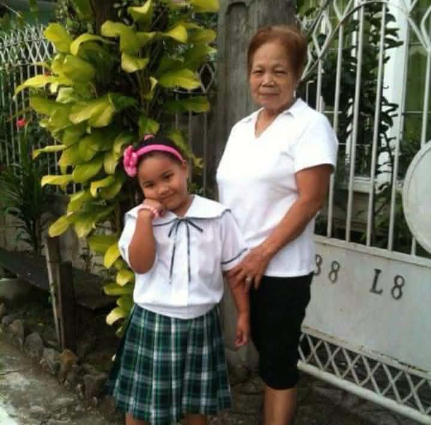
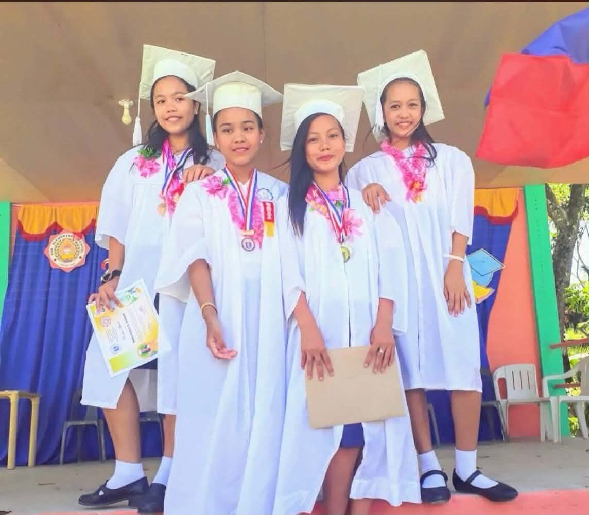

Elementary


I finished Grade 1 at Cainta
Elementary School. After Grade 1,
I transferred to Sua Elementary
School, where I continued my
elementary education and finished
Grade 2 up to Grade 6.
My elementary years were an important part
of my journey because they helped me build
the foundation for my future studies.
High School
I completed my Junior High School
up to Senior High School at
Argao National High School.
For Senior High School, I took the
STEM (Science, Technology,
Engineering, and Mathematics) strand.
My STEM experience helped me develop my
interest in technology and prepared me
for my college studies.
College
Currently, I am a
second-year Bachelor of Science
in Information Technology (BSIT)
student at
Cebu Technological University -
Argao Campus.
I chose this program because I want to
learn more about technology, programming,
and the different fields of Information
Technology.
Although studying IT can be challenging,
I hope to continue improving my skills
and growing as a student.